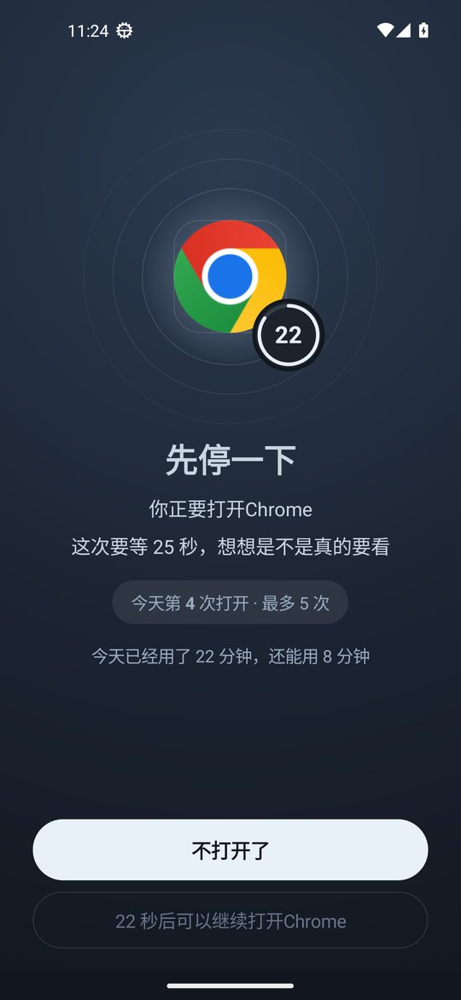

Dating and Chat Apps You Keep Opening
On Tinder, Hinge or Bumble there is always one more profile, and every reply brings a new message. One quick look often takes half an hour. Kids chat with classmates on Discord or QQ and keep reading the group chat after the lights are off. Ripple can limit how many times a day these apps open and how long they can be used, and close them at bedtime. The first part below is for adults, the second part is for parents, and both Android and iPhone are covered.
Open limits and daily limits (Android, Chinese interface)



Adults: one swipe, one reply, and half an hour is gone
Limit how many times a day it opens
Dating apps are the ones you open just to check. In Ripple for Android, give Tinder or Hinge 5 opens a day. When they are used up, the app stays closed until tomorrow.
Pause before opening
With the pause turned on, you have to wait a moment every time you open the app. That is enough time to notice whether you have a reason to open it.
Add a daily time limit too
You can also set a daily limit such as 30 minutes, in 1 minute steps from 1 minute to 12 hours. After that the app stays closed and the count resets at midnight.
Close them at bedtime
Most of the swiping happens in bed. Add a focus schedule from 11:30 pm to 7 am and put dating and chat apps in it.
Taking a break? Set 0 minutes
After a breakup, before an exam or when you just want a rest, set the app to 0 minutes so it does not open all day. Strict mode means rules can only be loosened with the unlock code. The code is at least 8 digits, you can give it to a friend, strict mode also turns on Anti-Uninstall, and if the code is lost you can ask to remove it after 72 hours.
iPhone: block by schedule
The iPhone version is v0.1.5 and has no open limits, daily limits, 0 minutes or strict mode yet. You can put dating apps in a bedtime or work schedule so the system blocks them in the background, and set an unlock code.
Parents: kids chatting until midnight
Close chat apps at bedtime
On a child's Android phone, add a sleep schedule from 9:30 pm to 7 am with Discord, QQ and other chat apps in it. They will not open under the covers.
Keep only what homework needs
If the class group is on another app, the homework schedule can close only the chat app that keeps them busy, plus short video and games, while calls still work. For a short stretch, start a one tap quick focus and choose Lock only the apps I pick.
Leave a fixed amount of chat time
If you do not want to cut them off from friends, give the chat app 40 minutes a day and 10 opens a day. Your kid can see what is left today.
Block it before exams
Set the chat app to 0 minutes the week before finals and change it back afterwards.
They cannot change settings or delete it
With strict mode on, rules can only be loosened with the unlock code you keep, and Anti-Uninstall is turned on too. Android timing uses time since boot, so changing the phone clock does not help. See clock change protection.
iPhone: block by schedule
If your kid has an iPhone, put the chat app in homework and sleep schedules and turn on the block on deleting apps. See the iPhone page.
Setup (Android v0.1.14)
Install or update to v0.1.14
Download the latest APK and turn on the accessibility service when asked. If you have an older version, update in Settings › About › Check for updates. Your rules stay.
Give chat and dating apps an open limit
In Daily limits, tap the app, set the number of opens a day, and turn on the pause before opening if you want it.
Add a daily limit and a bedtime schedule
Give the same app a daily limit, then put it in an 11:30 pm to 7 am schedule. On a child's phone add a homework schedule too.
Set an unlock code, and strict mode if needed
Give your own code to a friend. On a child's phone the parent keeps the code.
FAQ
I can't stop swiping on dating apps. How do I limit them?
On Android v0.1.14, give the app a daily open limit, turn on the pause before opening, add a daily time limit from 1 minute to 12 hours and put it in an 11:30 pm to 7 am bedtime schedule. For a break, set it to 0 minutes and turn on strict mode with an unlock code of at least 8 digits held by a friend. iPhone v0.1.5 can block it by schedule.
My kid chats on Discord or QQ until midnight. What can I do?
On a child's Android phone, close chat apps with a 9:30 pm to 7 am sleep schedule, give them 40 minutes and a few opens a day, and set 0 minutes before exams. Strict mode means only the parent's code can loosen rules, and it turns on Anti-Uninstall. On iPhone, use schedules and the block on deleting apps.
Does Ripple read my messages?
No. Ripple only checks which app is open. It does not read chats, and settings stay on the phone.
Can it block one chat inside an app?
No. Ripple works on whole apps.
Does the iPhone version have open limits or daily limits?
Not yet. iPhone v0.1.5 has schedules, the block on deleting apps, clock change protection and an unlock code. Open limits, daily limits, 0 minutes and strict mode are Android only.
Does it cost money or need an account?
It is free with no ads and no account.